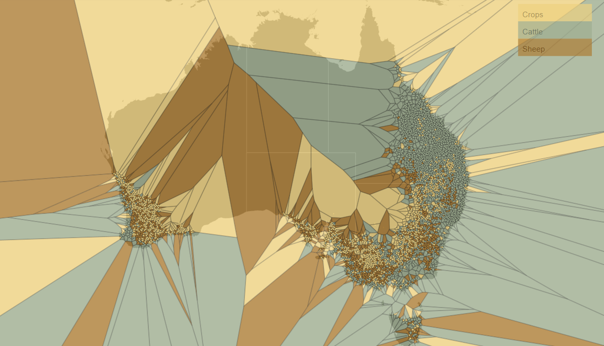
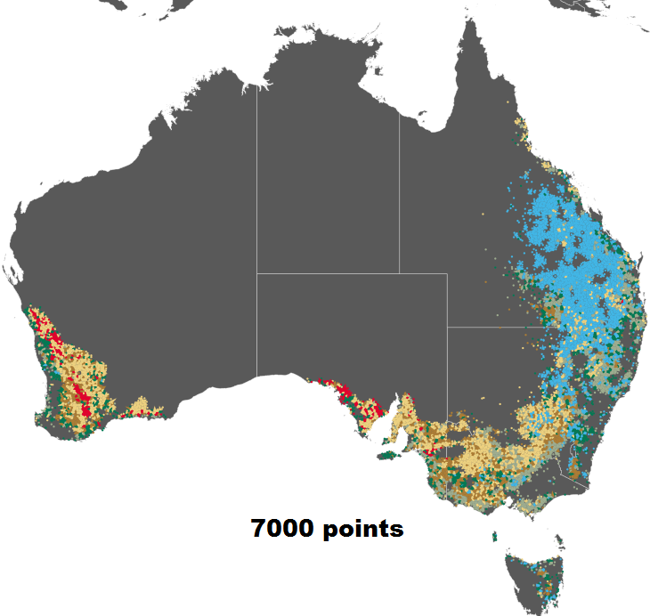
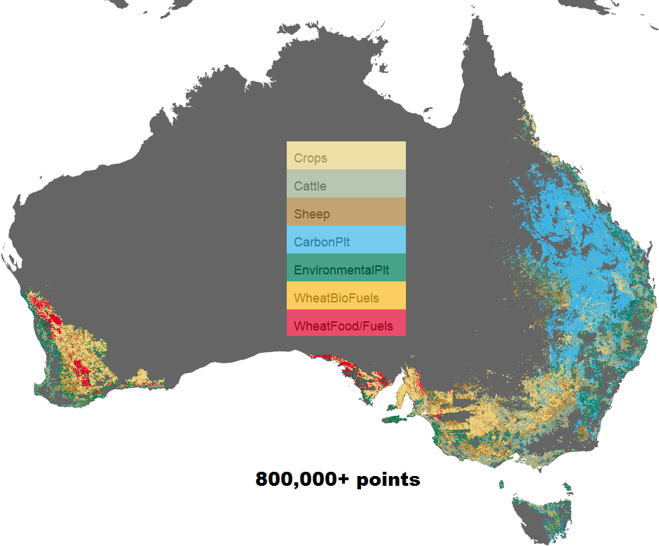

Vector Dot Map Simplification
Problem Description
The obtained dataset is a result of land use trade-off simulation in Australia over a certain time period (e.g. 38 years). It contains over 6 million of geo data points with each point representing a 1 km grid in Australia.
There are two major issues when trying to render a vector dot map using the given data: performance and overdrawing. While the performance issue seems to be quite straightforward: there are
just simply way too many points; overdrawing or overplotting issue arises when trying to draw a large amount of points in the limited screen space. Imagine if we use a 1 pixel dot to represent 1 km grid in Australia, to avoid dots overlapping each other,
we need at least 4000 x 3000 pixel screen area to represent the whole Australia map (giving that Australia is around 4000 km from the east to west, and 3600 km north to south).
Although instead of using vector map, we can always render a raster map using raster images (e.g. Figure 1) or tiled raster images (e.g. WMS map service), but it's never the same ! Vector map is a database of points, lines or polygons, while a raster map is only
a dumb image containing only pixels. To shrink a raster map, image down sampling algorithms are usually employed, which essentially introduce new colors to the map due to the color blending nature (via interpolation) of image downscaling [4]. However, this can be definitely avoided in vector map.
Furthermore, with vector map, additional geographic information can be linked to data points to facilitate interaction and exploratory data analysis. Therefore, it is worthwhile to study how to best simplify a vector map that contains millions of points!
To find out more about raster map v.s. vector map, check out here.
How did we attemp to solve it?
The intended solution is to use a small amount of data to approximate the original data as much as possible at different resolutions (i.e. zoom levels).
Step1: Uniform Random Sampling
The idea is to randomly select samples from the original dataset, such that the selected samples are uniformly distributed over the 2D space. Here, a poisson-disc sampling is used, which guarantees a minimum distance between each sampled pair. Figure 2 shows a vector map with 5000 sampled data points.
Step2: Voronoi Tessellation
After our samples are selected, in order to fill up the space, we use Voronoi diagram to divide up the space by the sampled points, which leads to the giant the spider web of Australia (see Figure 2)! In each Voronoi polygon, the sampled points are centroids. By using Voronoi diagram, we essential generate an irregular grid around each sampled point. More stuffs about Voronoi diagram are available here.
Figure 2. Vector map of the uniform randomly sampled dataset (5000 points) for year 2012 (Use mouse to zoom in and see more details).Step3: Polygon filtering and clipping
Although we manage to divide up the space by the Voronoi diagram, since Voronoi diagram is convex, if we go ahead and color the polygons by their centroids (i.e. the sampled points) straight away, we will end up getting something like the figure below, which looks a bit crazy.
Figure 3. Voronoi polygons colored by the class of the sampled points.What shall we do then ? The simplest way is to develop some metrics to filter out polygons whose areas are too large. And other methods could be find the convex/concave hull of the original dataset and clip the boundary of the Voronoi diagram. Although this part is still work in progress, there is already some interesting result (Figure 4)! As you may see, the irregular polygons are used to represent continuous regions, whereas the points are used to reflect sparse regions on the map.
 Figure 4. Results of our simplified vector map using 7000 sampled points(left) compared to the full resolution map (right).
Work in Progress
This is still a work in progress, just about every single step in this work flow can be improved! For instance, the random sampling can be improved to better reflect class distribution and temporal change of the point data. The Voronoi polygons can be better filtered to reflect finer details on the map. And what's more, a multi-resolution approach is needed to display more details when user zooms into certain part of the map.
References
[1] Wei, L. Y. (2010). Multi-class blue noise sampling. ACM Transactions on Graphics (TOG), 29(4), 79.
[2] Chen, H., Chen, W., Mei, H., Liu, Z., Zhou, K., Chen, W., ... & Ma, K. L. (2014). Visual Abstraction and Exploration of Multi-class Scatterplots. Visualization and Computer Graphics, IEEE Transactions on, 20(12), 1683-1692.
[3] De Berg, M., Bose, P., Cheong, O., & Morin, P. (2004). On simplifying dot maps. Computational Geometry, 27(1), 43-62.
[4] Kopf, J., Shamir, A., & Peers, P. (2013). Content-adaptive image downscaling. ACM Transactions on Graphics (TOG), 32(6), 173.